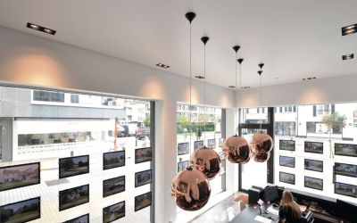
Plafond tendu climatisé
Améliorez le confort thermique et assainissez l’air de votre intérieur ou de vos bureaux grâce à la technologie Barrisol.
Demander un devisHome Passion conçoit et pose des plafonds tendus sur mesure pour les particuliers et les professionnels : design, performance technique et finitions soignées.
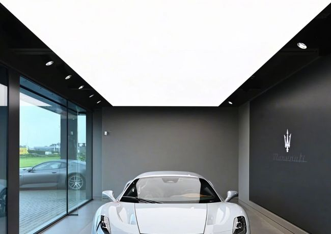
Plafond lumineux, showroom Maserati à Wommelgem
Une toile en PVC, tendue à quelques centimètres de votre plafond. Choisissez la fonction qui correspond à votre projet.

Améliorez le confort thermique et assainissez l’air de votre intérieur ou de vos bureaux grâce à la technologie Barrisol.
Demander un devis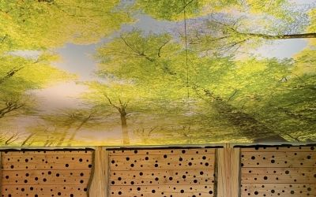
Couleurs, impressions, ciel étoilé ou photo grand format : donnez une atmosphère unique à votre pièce.
Demander un devis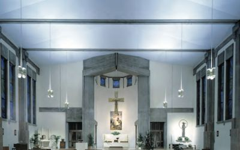
Réduisez la réverbération et les nuisances sonores pour un vrai confort d’écoute, à la maison comme en entreprise.
Demander un devis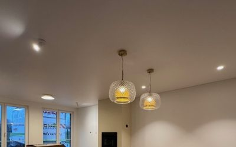
Rétroéclairage, spots ou lignes de lumière : une luminosité douce et chaleureuse, entièrement sur mesure.
Demander un devis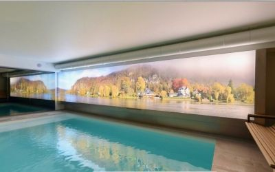
Les atouts du plafond tendu sur vos murs : résistant, pratique et esthétique, avec impression personnalisée.
Demander un devis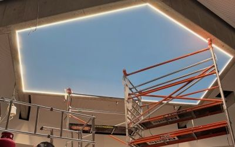
De la réflexion à l’entretien, Home Passion vous accompagne pendant toute la durée de vie de votre plafond.
Demander un devisLaurent Touette a choisi de se spécialiser dans une technique encore méconnue chez nous. Revendeur agréé Barrisol, leader mondial, il vous accompagne avec son équipe pour un résultat alliant design et performance.
Sans poussière de plâtre pour les occupants.
Une installation fiable et durable.
Compatible avec les pièces d’eau.
Posé à 3 cm de votre plafond d’origine.
Pas de fissure, plus de peinture à refaire.
Mat, satiné ou laqué, nombreux coloris.
Éclairage intégré, modèles anti-écho.
Toile en PVC entièrement recyclable.
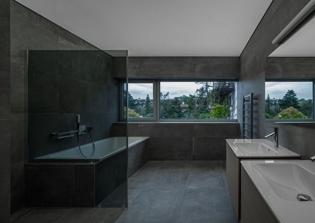
Maisons, commerces, hôtels, piscines, showrooms : des chantiers pour tous les budgets et tous les styles.
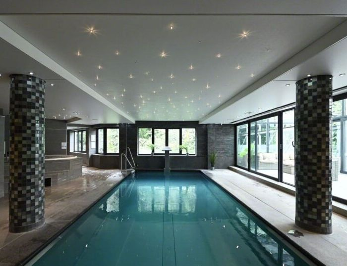
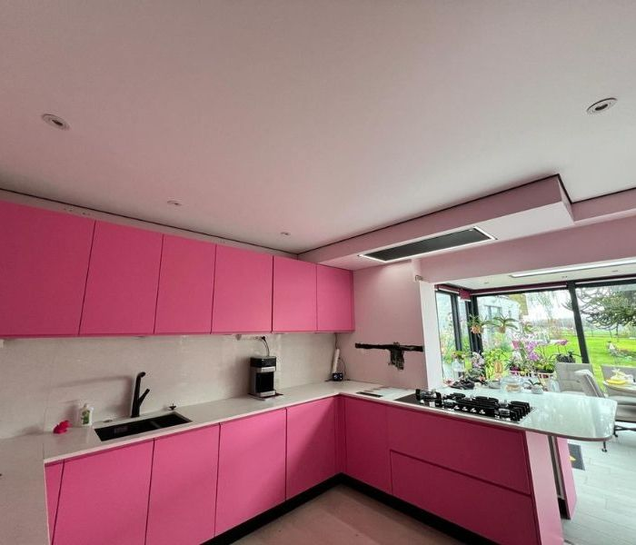
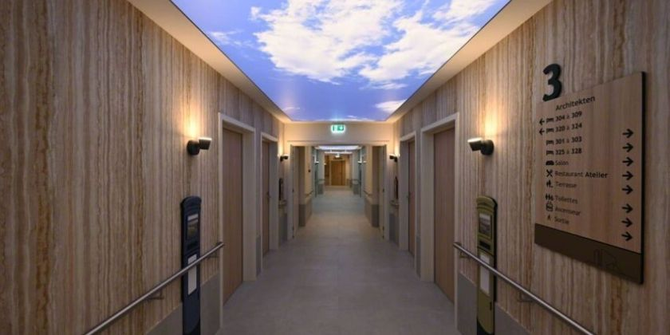
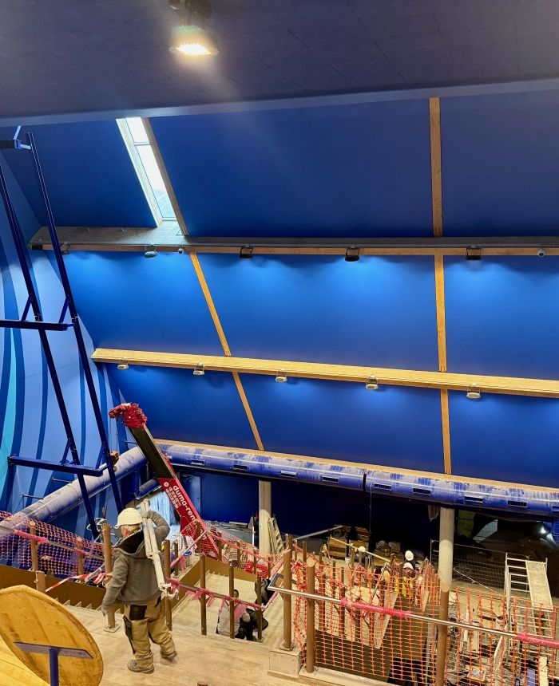
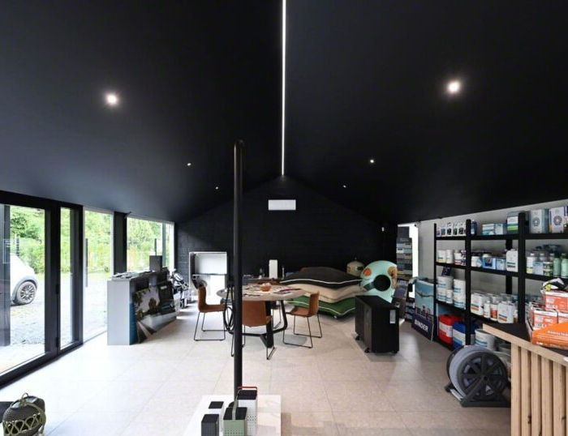
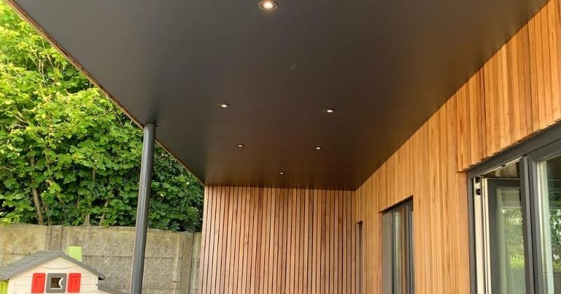
Un interlocuteur unique, du premier contact à l’entretien.
Décrivez votre projet. Vous recevez une offre chiffrée sous 24 h.
Choix de la toile, de l’éclairage et des finitions, puis prise de mesures.
Installation propre et rapide, en général en une journée.
Garantie 10 ans, entretien et réparation si nécessaire.
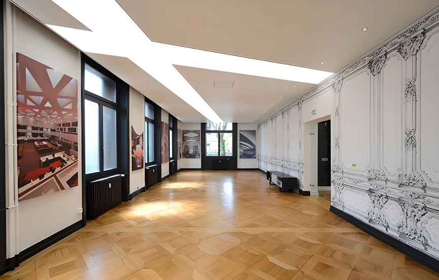
Basés à Aywaille, nous nous déplaçons pour tous vos projets de plafond tendu et de toile tendue.
Que ce soit du commercial aux installateurs et le service après-vente, je recommande fortement. Très sympathique, le rendu est excellent et parfait.
Un immense merci à toute l’équipe pour le travail exceptionnel réalisé sur le plafond de ma cuisine. Le résultat est tout simplement parfait.
Nous voulions embellir notre bâtiment piscine. La réalisation est simplement magnifique, et les finitions sont au top.
De très bons conseils pour notre cuisine / salle à manger. Délais rapides, rendu final exactement comme on l’imaginait.
Après un dégât des eaux, votre solution a réparé ma pièce de vie et l’a transformée en mieux. Tout a été fait en un jour.
Tout a été fait en respectant les délais et le devis. Vraiment top et un tout grand merci.
C’est une toile en PVC tendue à quelques centimètres de votre plafond d’origine. Pas de poussière de plâtre, pas de fissure possible.
Une journée suffit en général pour poser votre nouveau plafond.
Oui. La toile résiste à l’humidité et se nettoie facilement : elle convient aux pièces d’eau.
Oui. Nos modèles acoustiques réduisent la réverbération et les échos dans la pièce.
Oui : finitions mat, satiné ou laqué, nombreux coloris, impressions, rétroéclairage et spots.
Les plafonds tendus Barrisol posés par Home Passion sont garantis 10 ans.
Décrivez votre projet avec un maximum de détails (pièce, surface, éclairage souhaité). Nous revenons vers vous avec une offre chiffrée.